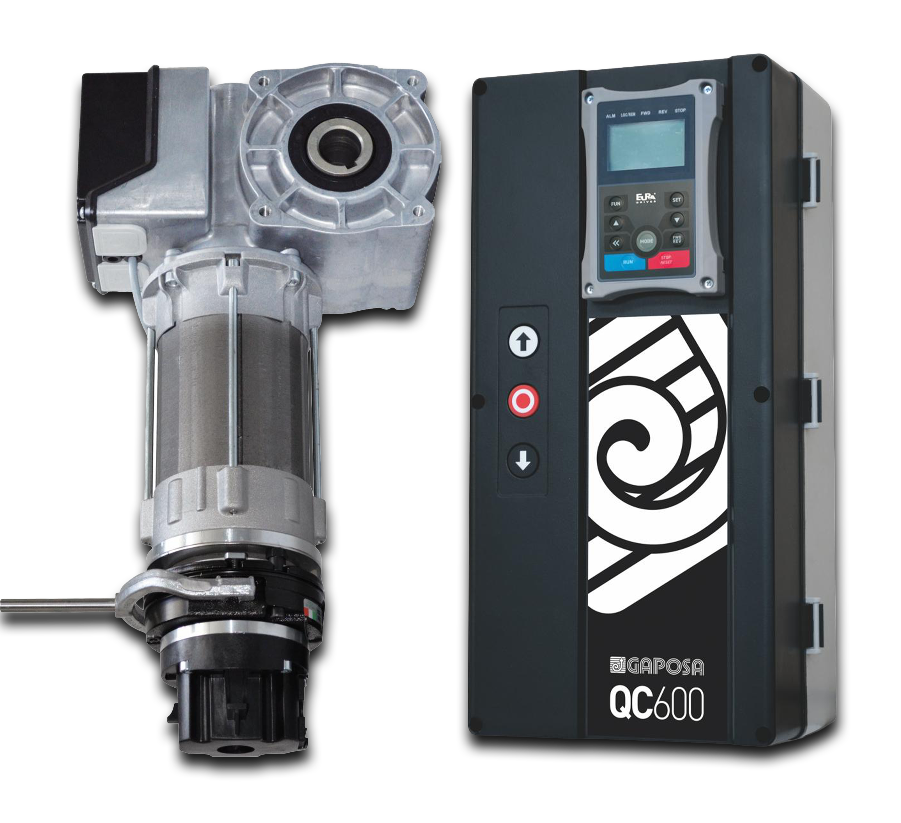

Szybki cykl pracy
Napęd o prędkości 130 obr/min odpowiada na potrzeby bram pracujących często i intensywnie.
Wysoka prędkość, falownik i sterowanie w jednym systemie.
Zestaw do bramy przemysłowej szybkobieżnej, intensywność użytkowania 45 cykli/godzinę.
Siłownik 3~230 V z momentem obrotowym 60 Nm, przekładnia w kąpieli olejowej, obsługa awaryjna za pomocą korby, elektrohamulec enkoder.
Centrala sterująca 1~230 V z inwerterem, wyposażona w przyciski sterujące, wyświetlacz LCD, umożliwia łatwą konfigurację parametrów pracy bramy.

Dobór napędu i sterowania wpływa na bezpieczeństwo, niezawodność oraz wygodę późniejszego serwisu. BBS 60130RME + QC600S odpowiada na te potrzeby w zastosowaniach z kategorii: bramy szybkobieżne.
Napęd o prędkości 130 obr/min odpowiada na potrzeby bram pracujących często i intensywnie.
QC600S z falownikiem pozwala regulować prędkość oraz łagodnie prowadzić ruch bramy.
Komplet napędu i centrali upraszcza dobór rozwiązania do hal, magazynów, chłodni i produkcji.
| Zastosowanie | Bramy szybkobieżne i rolowane |
|---|---|
| Napęd | Gaposa BBS 60130RME |
| Centrala sterująca | Gaposa QC600S |
| Moment obrotowy | 60 Nm |
| Prędkość | 130 obr/min |
| Intensywność pracy | 45 cykli/godz. |
| Moc napędu | 1,0 kW |
| Klasa ochrony napędu | IP54 |
| Klasa ochrony centrali | IP66 / NEMA 4 |
Przekaż nam podstawowe informacje o bramie i sposobie użytkowania. Doradca Cezab Distribution pomoże potwierdzić konfigurację oraz przygotuje ofertę.